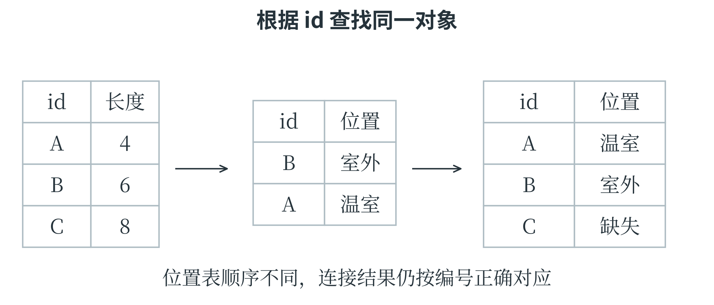

7.2 Pandas
有列名的表格
Pandas 适合处理有字段名的表格数据。Series 表示带索引的一列数据，DataFrame 表示由多列组成的表。不同列可以采用不同类型，例如编号为字符串、长度为小数、类别为文字。下面使用字典创建一张表，字典的键成为列名，各列表中的同一位置构成一行；None 表示缺失。
import pandas as pd
df = pd.DataFrame({
"id": ["A", "B", "C", "C"],
"length": [4.0, None, 8.0, 8.0],
"width": [1.0, 2.0, 3.0, 3.0],
"kind": ["甲", "乙", "甲", "甲"]
})
print(df.shape)
print(df.head(2))
shape 为 (4, 4)，head(2) 显示前两行。表格最左侧默认出现的 0、1 等数字是行索引，不是 id 列的内容。df["length"] 得到一个 Series，df[["length", "width"]] 则得到两列构成的 DataFrame。这里两层方括号有不同作用：里面是一份列名列表，外面用它选择表格列。iloc 按整数位置选择，df.iloc[0, 1] 得到第一行第二列的 4.0；loc 按行索引标签和列标签选择。若把 id 设成索引，就可以用样本编号选行。但本表 C 出现两次，以 C 选取时会得到两条记录，不能假定索引标签一定唯一。位置切片的右端不包含，标签切片在相应用法中通常包含右端，阅读文档时需要区分。
文件中常见的 CSV 以分隔符组织行列。pd.read_csv("leaves.csv") 读取文件，df.to_csv("cleaned.csv", index=False) 保存表格；后面的 index=False 表示不把行索引额外写成一列。若当前文件夹没有该文件，读取会报文件不存在，不能把路径问题当作数据处理算法的错误。下面用内存中的文本演示相同的读取方法，不需要事先准备文件。
from io import StringIO
csv_text = "id,length,width\nA,4.0,1.0\nB,6.0,2.0\n"
small_table = pd.read_csv(StringIO(csv_text))
print(small_table["length"].mean())
输出为 5.0。StringIO 把字符串包装成可读取的文本对象，read_csv 再按行列解释内容。实际文件还可能需要说明字符编码、分隔符或日期格式，这些都是读取规则，不应在失败后盲目删除看不懂的内容。
筛选、清洗和分组
可以先用 isna 识别缺失，再决定处理方式。下面先删除完全相同的重复行，再在这份示意表内用已知长度的均值填充缺失。它仅演示清洗操作；若这张表进入机器学习流程，应先划分数据，再从训练部分学习填充值。
clean = df.drop_duplicates().copy()
print(clean["length"].isna().sum())
mean_length = clean["length"].mean()
clean["length"] = clean["length"].fillna(mean_length)
selected = clean.loc[clean["length"] >= 6,
["id", "length", "width"]]
print(selected)
第一项输出 1，表示一条长度缺失。去重后已知长度为 4 和 8，均值为 6，B 的长度因此被填为 6。筛选结果保留 B、C 两行。drop_duplicates() 不指定字段时按整行比较；若只按编号去重，应明确 subset="id"，并先判断同一编号的多条记录到底是重复录入还是不同时间的有效观测。
对按时间排序、间隔相同的一列数，可以用线性插值演示中间缺失值的估计：
temperatures = pd.Series([18.0, None, 22.0])
print(temperatures.interpolate().tolist())
print(clean.groupby("kind")["length"].mean())
第一项为 [18.0, 20.0, 22.0]。第二项先按 kind 分组，再对每组长度求平均，甲类均值为 6，乙类也是 6。groupby 不是训练分类模型，它依据现有字段把记录分组后执行统计。如果要同时查看每组样本数，还应增加计数，避免把样本很少的组与大组的均值作过强比较。
连接、追加与类别转换
下面的右表为每个编号补充采集区域。左连接保留 clean 的所有记录，编号 C 在右表没有出现，连接后的区域字段因而缺失。
places = pd.DataFrame({
"id": ["A", "B"],
"place": ["温室", "室外"]
})
joined = clean.merge(places, on="id", how="left",
validate="one_to_one")
print(joined[["id", "place"]])
on 指定共同的键，how="left" 指定左连接，validate="one_to_one" 要求两边的连接键都唯一；若这一约定不成立，程序会报告问题，便于发现意外重复。Pandas 也有 join 方法，常按索引组织连接。使用哪种写法，都要先清楚按哪个字段配对，以及一条记录可能匹配几条。
new_row = pd.DataFrame({
"id": ["D"], "length": [5.0],
"width": [1.5], "kind": ["乙"]
})
combined = pd.concat([clean, new_row], ignore_index=True)
encoded = pd.get_dummies(combined, columns=["kind"],
dtype=int)
print(encoded.columns.tolist())
concat 沿行方向追加，ignore_index=True 为结果重新安排连续行索引。追加操作在概念上也常称 append，但较新版本的 Pandas 已移除 DataFrame.append 方法，应使用 concat。
get_dummies 将类别列转换成独热列，结果中包含 kind_乙、kind_甲 等字段；具体顺序应查看实际列名。
分别对训练与新数据独立编码，可能产生不同列集合或顺序，机器学习时更适合使用在训练数据上确定类别规则的编码器。
标签相同与位置相同
前面筛选出的 selected 保留 B、C 两行，行索引仍为 1、2。筛选只是选择记录，并没有把它们的索引自动改为 0、1。于是 selected.iloc[0] 取得第一行，也就是 B；selected.loc[1] 则查找标签为 1 的行，在本例中恰好也是 B。两个结果相同，依据却不同。
print(selected.iloc[0]["id"])
print(selected.loc[1, "id"])
renumbered = selected.reset_index(drop=True)
print(renumbered.index.tolist())
前两行都输出 B，最后一行输出 [0, 1]。reset_index 可以重新安排索引，drop=True 表示不把旧索引另外保存成一列。样本编号 id 与表格行索引又是两种信息：A、B、C 是记录中的编号，0、1、2 是目前这张表采用的行标签。只要含义清楚，二者不必相同。连接表格时，更应使用能识别对象的字段。假设测量表按 A、B、C 排列，位置表却按 B、A 排列，直接把“位置”一列按顺序抄过去，会把 A 的位置误写成 B 的位置。merge 根据 id 匹配，能在两张表顺序不同时仍找到同一对象。没有匹配项的 C 保留下来，位置显示缺失，提醒后续补查。

还有一种更隐蔽的情况：如果位置表里 B 出现两次，连接结果可能让 B 的测量记录也出现两次。此时增加的是匹配组合，不能理解成又采集了一片叶子。前面的 validate="one_to_one" 要求连接字段在两边都不重复，遇到这种情况会报错。
报错提供了检查数据的线索：应先弄清两条 B 是否分别代表两个时间、两次观测，还是确实重复，再决定连接键是否需要同时包含日期等字段。